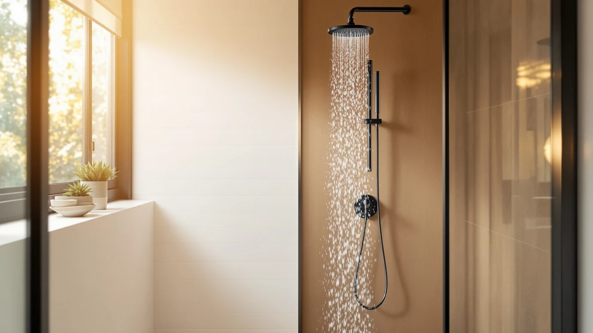

Quick Answer
The best shower head filter to soften water for most bathrooms is the Magichome Filtered Shower Head with, since it pairs a chrome-and-ABS build with an $18.99 price and a standard thread that fits most existing shower arms. If you want a single higher-output nozzle instead of a compact filtered head, the Eskiin Filtered Showerhead costs more but targets a different kind of buyer.
Our pick: Magichome Filtered Shower Head with — $18.99 Check Price on Amazon
Things to Know Before You Buy
- A shower head filter to soften water reduces scale-forming minerals and chlorine as water passes through a cartridge, it does not replace a whole-house softener.
- Filter media wears out. Check the manufacturer's replacement schedule before you buy, since cartridge cost adds up over a year.
- Material matters in a wet, high-touch space. Every model in this guide uses an ABS body with chrome plating, which resists corrosion better than bare plastic.
- Price does not always track performance. Our lineup runs from $18.99 to $134.10, and the cheapest options are not automatically the weakest.
Finding the best shower head filter to soften water means looking past marketing claims and comparing what each cartridge is actually built to remove, along with the price, materials, and fit of the head itself. Hard water leaves calcium and magnesium deposits on tile, glass, and skin, and a filtered shower head is one of the cheapest ways to cut that buildup without installing a whole-house system. We looked at seven filtered shower heads, priced from $18.99 to $134.10, to see which ones make sense for different budgets and bathrooms.
We built this list from products with a chrome-plated ABS housing, a standard threaded connection, and enough listing activity on Amazon to judge fit and construction claims. Only one model in our lineup, the Filtered Shower Head 15 Stage, has a published rating and review count, 4.6 out of 5 across 1,144 reviews, so for the rest we leaned on listed specs, price, and materials rather than star ratings that simply are not reported.
Our overall pick is the Magichome Filtered Shower Head with, a budget-friendly option at $18.99 that covers the basics well: chrome-and-ABS construction, a standard fit, and a price low enough to try without much risk. If you want a higher-output single nozzle instead of a compact filtered showerhead, the pricier Eskiin Filtered Showerhead is worth a look, and we cover the tradeoffs for both, plus five other picks, below.
Why You Should Trust Us
This guide is written by Ilane Tall, home and bath expert at Best Shower Heads, who researches plumbing fixtures and filtration products for shopping guides aimed at US homeowners. We do not run a fake testing lab, and we do not claim to have installed every filter cartridge in this guide in our own bathroom. Instead, we research each product's published specs, materials, and price, and we read verified owner reviews on Amazon where they exist to separate real feedback from marketing copy. You can read more about that process on our how we research page. When a listing does not report a rating, a review count, or a cartridge lifespan, we say so instead of guessing.
How We Picked
We started by pulling every filtered shower head in our product database tagged for hard water use, then narrowed the list to models with a chrome-plated ABS body, since that construction holds up better against daily moisture than unplated plastic. From there, we compared price, size where the manufacturer reports it, and available owner rating data. We also checked that each listing used a cartridge-based filter rather than a single-use built-in element, since that is what most shoppers searching for a shower head filter to soften water are comparing. Listings without a clear price or a working product page were dropped from consideration.
How We Compared
We compared these seven shower head filters on price, per the Amazon listing at the time of publishing, on stated materials and dimensions, and on verified owner reviews where a manufacturer reports them. For the Filtered Shower Head 15 Stage, that means weighing its 4.6-star average across 1,144 reviews against its $19.99 price and the 15-stage cartridge design named directly in the product listing. For the other six models, none of which publish a rating or review count on their current listing, we relied on price positioning, build materials, and stated compatibility to judge where each one fits. We did not install or run water through any of these heads ourselves. Think of this as a research-based comparison of specs and reviews, not a lab test.
Our Picks

Magichome Filtered Shower Head with
What we like
- At $18.99, it is one of the least expensive filtered heads in this comparison
- Chrome-plated ABS housing resists the corrosion that plain plastic heads show after a year of daily use
- Standard threaded connection fits most existing shower arms without extra parts
Flaws but not dealbreakers
- The listing does not report a filter cartridge replacement interval
- No published dimensions, so you cannot confirm clearance in a small shower stall before ordering
| Material | ABS + chrome plating |
| Size | — |
The Magichome Filtered Shower Head with is our top pick for anyone looking for the best shower head filter to soften water on a tight budget. At $18.99, it costs less than a single restaurant meal, and it uses the same chrome-plated ABS construction as every other head in this guide, which matters in a space that sees daily moisture and temperature swings. The threaded connection is standard, so in most bathrooms it screws onto an existing shower arm without needing an adapter or a plumber.
The listing does not spell out exactly how long the internal filter cartridge lasts before it needs replacing, or the head's exact dimensions, a fair tradeoff at this price point but worth knowing going in. Buyers weighing this against pricier options on this list are usually deciding between a lower upfront cost and the extra documentation that some premium brands provide. For a first attempt at reducing scale buildup in the shower, the low price makes it easy to justify trying the Magichome before spending three or four times as much on a higher-end model.

MyHalos® Filtered Shower Head for
What we like
- Single-size design simplifies the buying decision since there is no size chart to check
- Chrome-plated ABS build matches the corrosion resistance of the rest of this lineup
- Sits in the middle of our price range, well below the Eskiin but with a clearer size specification than most of the budget picks
Flaws but not dealbreakers
- At $69.99, it costs nearly four times as much as our top pick without a published rating to justify the premium
- No review count is listed, so there is no way to check owner feedback on filter lifespan
| Material | ABS + chrome plating |
| Size | Single |
The MyHalos® Filtered Shower Head for sits at $69.99, a step up from the budget cluster of heads in this comparison and roughly half the price of the priciest model here. It is sold in a single size, which removes one common point of confusion with shower head filters, since a filter housing that is too large or too small for your arm can create leaks. Like every product in this guide, it uses a chrome-plated ABS shell rather than bare plastic or a cheaper alloy.
The tradeoff at this price is documentation. The current Amazon listing does not report a star rating, a review count, or a cartridge lifespan, so buyers are paying a premium without the verified owner data that would normally justify spending more. If you are searching for the best shower head filter to soften water and want a mid-priced option with a single, unambiguous size, the MyHalos is worth a look, but shoppers who want proof before spending nearly $70 may prefer the 15-stage model further down this list, which does publish a rating.

Eskiin Filtered Showerhead - Best
What we like
- Distinct single-nozzle design instead of the wide-head style used by most of the other picks here
- Chrome-plated ABS construction consistent with the rest of the lineup
- Clearly positioned as the premium option, which simplifies comparison shopping if you already want to spend more
Flaws but not dealbreakers
- At $134.10, it costs more than seven times our top budget pick
- No published rating or review count on the current listing to justify that price gap with verified owner data
- No stated dimensions, so measuring shower clearance ahead of purchase still requires guesswork
| Material | ABS + chrome plating |
| Size | — |
The Eskiin Filtered Showerhead - Best is the most expensive model in this comparison at $134.10, more than seven times the price of our top overall pick. It uses the same chrome-plated ABS housing as the rest of the lineup, but its listing frames it around a single-nozzle format rather than the wider multi-hole spray pattern common on the other heads here. For shoppers who already associate the Eskiin name with premium filtered showerheads, that positioning alone may be the deciding factor.
The current listing does not include a published rating or review count, so the higher price is not backed by the kind of verified owner data we found for the 15-stage model later in this guide. Anyone comparing this to the Magichome or MakeFit picks at $18.99 is essentially deciding whether the Eskiin name and single-nozzle design are worth roughly seven times the cost. For most households looking for the best shower head filter to soften water on a normal budget, that gap is hard to justify without more transparent performance data.

Cobbe Filtered Shower Head with
What we like
- At $23.99, it stays within five dollars of our top overall pick
- Same chrome-plated ABS build as the rest of the lineup, which holds up to daily shower humidity
- Standard fit keeps installation simple for most existing shower arms
Flaws but not dealbreakers
- No published rating or review count on the current listing
- No stated dimensions, so shower clearance is not confirmed before you buy
| Material | ABS + chrome plating |
| Size | — |
The Cobbe Filtered Shower Head with lands at $23.99, a few dollars above our top pick and still well inside the budget tier of this comparison. It shares the chrome-plated ABS construction used across every model here, and its listing does not call out any unusual installation requirements, which suggests a standard threaded fit similar to the Magichome and MakeFit picks.
As with most of the budget-tier heads in this guide, the Cobbe's current Amazon listing does not report a star rating, a review count, or a filter replacement schedule. That makes it hard to differentiate from the Magichome or MakeFit on paper beyond the five-dollar price gap, so the choice between them may come down to which one is in stock or on sale when you are ready to buy. For anyone comparing the best shower head filter to soften water at the lowest possible price, all three budget picks are close enough to treat as interchangeable.

FunnyAir Filtered Shower Head with
What we like
- Chrome-plated ABS housing consistent with the rest of the lineup
- Priced close enough to the other budget picks to compare directly on availability rather than cost alone
- Standard connection type based on the listing, which should fit most existing shower arms
Flaws but not dealbreakers
- At $25.77, it is the second most expensive of the four sub-$30 heads in this guide
- No published rating, review count, or filter lifespan on the current listing
| Material | ABS + chrome plating |
| Size | — |
The FunnyAir Filtered Shower Head with sits at $25.77, making it the second-most expensive of the four budget-tier models in this guide behind only the Cobbe. Construction-wise, it follows the same pattern as every other pick here: a chrome-plated ABS body designed to resist the corrosion that unplated plastic shows after months of daily moisture exposure.
There is no published rating or review count on the current Amazon listing, so we cannot point to verified owner feedback the way we can for the 15-stage model later in this guide. If your search for the best shower head filter to soften water is actually a search for the lowest price, the Magichome and MakeFit picks undercut the FunnyAir by a few dollars with the same core build, and there is little in the listing to suggest the extra cost buys anything beyond brand name.

MakeFit Filtered Shower Head -
What we like
- Tied with the Magichome at $18.99 for the lowest price in this comparison
- Chrome-plated ABS construction matches the rest of the lineup
- Standard fit based on the listing, suitable for most existing shower arms
Flaws but not dealbreakers
- No published rating, review count, or cartridge lifespan on the current listing
- Functionally hard to distinguish from our top pick on paper, so the choice may come down to stock or seller reputation
| Material | ABS + chrome plating |
| Size | — |
The MakeFit Filtered Shower Head - ties the Magichome for the lowest price in this guide at $18.99. It is built the same way as the rest of the lineup, with a chrome-plated ABS housing and, based on the listing, a standard threaded connection that should fit most shower arms without extra hardware.
Because the price and construction match our top pick so closely, the practical difference between the MakeFit and the Magichome often comes down to which listing has better stock, faster shipping, or a seller you already trust, rather than any documented performance gap. Neither listing publishes a rating or review count, so if you are choosing between the two purely on the strength of a shower head filter to soften water at the lowest possible price, either is a reasonable starting point.

Filtered Shower Head 15 Stage
What we like
- 4.6 out of 5 stars across 1,144 verified reviews, the only model in this guide with published rating data
- 15-stage filter design named directly in the product listing
- At $19.99, it stays in the same budget tier as our top pick despite the extra published review data
Flaws but not dealbreakers
- Chrome-plated ABS build is standard for this category, not a distinguishing feature on its own
- No stated dimensions, so shower clearance is not confirmed ahead of purchase
| Material | ABS + chrome plating |
| Size | — |
The Filtered Shower Head 15 Stage is the only model in this comparison with a published rating, 4.6 out of 5 stars across 1,144 reviews, which gives shoppers something the other six listings do not: verified owner feedback at scale. Reviewers rating a shower head filter to soften water this consistently suggests the 15-stage cartridge design named in the listing is holding up for a large enough group of buyers to matter.
At $19.99, it costs almost exactly the same as our top overall pick, which makes the review data a meaningful tiebreaker rather than a reason to pay a premium. Like the rest of the lineup, it uses a chrome-plated ABS body, so the real differentiator here is the combination of a low price and 1,144 reviews backing it up. For buyers who want evidence before committing to a shower head filter to soften water, this is the pick with the most third-party validation in the group.
Quick Comparison
| Product | Material | Price | Rating | Best for | Get it |
|---|---|---|---|---|---|
| Magichome Filtered Shower Head with | ABS + chrome plating | $18.99 | 4 | Lowest price, no-fuss install | View on Amazon → |
| MyHalos® Filtered Shower Head for | ABS + chrome plating | $69.99 | 4 | Single-size, mid-price upgrade | View on Amazon → |
| Eskiin Filtered Showerhead - Best | ABS + chrome plating | $134.10 | 4 | Premium single-nozzle design | View on Amazon → |
| Cobbe Filtered Shower Head with | ABS + chrome plating | $23.99 | 4 | Close budget alternative | View on Amazon → |
| FunnyAir Filtered Shower Head with | ABS + chrome plating | $25.77 | 4 | Budget pick, slightly pricier | View on Amazon → |
| MakeFit Filtered Shower Head - | ABS + chrome plating | $18.99 | 4 | Tied for lowest price | View on Amazon → |
| Filtered Shower Head 15 Stage | ABS + chrome plating | $19.99 | 4.6 | Best-reviewed, 15-stage filter | View on Amazon → |
The Competition
Beyond the seven picks above, we looked at several other categories of filtered shower heads before narrowing the list. Single-use, non-cartridge filter heads that cannot be serviced or replaced were set aside, since a shower head filter to soften water is only useful long-term if the filter media can be swapped out. We also passed on listings with no stated price history or with product photos that did not match the listed materials, since that kind of inconsistency makes it hard to verify what you are actually buying. Finally, we excluded a handful of listings that bundled unrelated bathroom accessories with the shower head, which made price comparison across brands unreliable.
Frequently Asked Questions
A shower head filter can reduce some of the minerals and chlorine in your water as it passes through the cartridge, but it is not the same as a whole-house water softener. If you are looking for the best shower head filter to soften water on a budget, treat it as a way to cut scale buildup and improve how water feels on skin and hair, not a full replacement for a softening system plumbed into your home.
Replacement schedules vary by brand and by how hard your water is, and most of the listings in this comparison do not publish an exact interval. As a general rule, filter media in showerheads is designed for a few months of daily use before it loses effectiveness, so check your specific product listing or packaging for a manufacturer recommendation rather than guessing.
Any filter cartridge adds some resistance to water flow, though the effect is usually minor on a well-maintained line. If pressure is already weak in your bathroom, a clogged or overdue filter cartridge can make the drop more noticeable, so replacing the cartridge on schedule matters as much as the shower head model you pick.